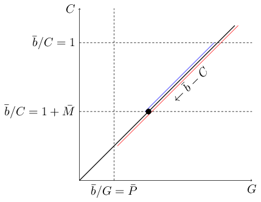
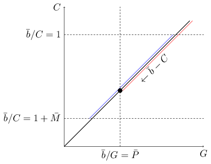
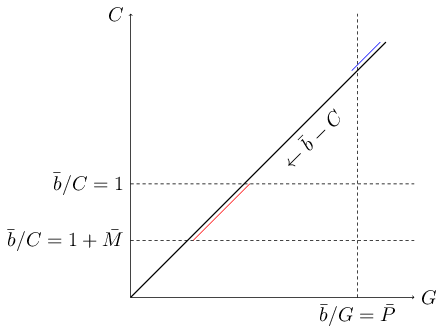

This is the first of a series of posts about the way we optimize our bidding process. The bidding rules we follow are very principled and their rationale is not easily described in a short and sweet post because some preliminar development of the mathematical foundations is in order, so we decided to deploy this as a series of four posts. The goal is to have the time and space to achieve a good balance between rigor and intuition while keeping a comfortable pace. We will as well be posting about different related subjects (Lagrange duality, stochastic subgradient descent) throughout this year, but in this series we consider those topics as means to a rather specific end and not as interesting subjects per se.
As you probably already know, Jampp is a demand-side platform (DSP) that manages hundreds of advertising campaigns for dozens of clients (advertisers). Advertising inventory coming from multiples sources is programmatically bought by real-time bidding (RTB) in billions of (mostly second-price) auctions per day. With each RTB auction, some information about a user (audience) currently visiting a web site or mobile app is made available: device id and type, operating system, country, app or site name, etc. Conditioning on this contextual and other historical information associated with the device, our bidder has to infer, in less than a few milliseconds, the probabilities of getting different events of interest (clicks, app installs, in-app events, etc.) on behalf of clients running campaigns that target the auction profile. More precisely, the probability of getting those events given that we win the auction and thus are entitled to display one of the many ads configured for the selected campaign. Effective decision making additionally requires as input inferences about expected costs and probability of winning the auction at different bid prices. The inference problem is interesting per se and far from trivial, but here we are mainly concerned with the economical decisions we have to make having proper estimates at hand, so we take those estimates as a given from now on. 1.
As a firm operating in a market economy, maximizing profit is an obvious goal for Jampp. But it is also evident that we will be constrained in this pursue by restrictions on the volume and cost of purchases done for the sake of each advertising campaign. Since an auction often represents an opportunity for more than one campaign, there is an opportunity cost of assigning it to this instead of that campaign. Therefore, the opportunity has to be weighted not only by the expected profit of assigning it to each campaign, but also by the expected impact of this assignment on the constraint set of each campaign; or, for the economists out there: the “shadow prices” of constraints have to be taken into account. Given the huge number of non-divisible auctions to be considered, this is a hard combinatorial optimization problem that we can only expect to approximately solve in a relaxed form. Finding a good relaxation of the constraints is our main task in what follows, but first we need to establish a formal setting in order to properly formulate the problem, so we start by defining its main components.
Some preliminary definitions
Bids belong to the interval while ads belong to the finite set . 3 For each auction, we have to decide whether we ignore it or, otherwise, we assign it to some campaign and chose a bid and an ad for it. This policy constitutes our bidding strategy:
We also define some functions that aggregate auctions across campaigns in order to simplify the exposition of optimization problems in the following sections.
Two optimal bidding problems: MBFP and FBMP
With the previous definitions in place, we are ready to state a first version of the problem. Actually, Jampp daily deals with two different types of problem:
-
Maximum budget, fixed price (MBFP): in this type of contract our client, the advertiser, sets an upper bound to the money he wants to spend in the campaign. The value of each desired goal (click, install, in-app event, etc.) is also informed by the client as a price .
-
Fixed budget, maximum price (FBMP): in this second type of contract the advertiser commits herself to pay a total amount in case we deliver enough goals to put his unitary price below an upper bound . As we shall soon see, one more parameter is involved in this kind of contract, making it more complex than MBFP.
We now proceed to formally state the MBFP problem:
Similarly, the FBMP is formalized as:
Notice that, in both cases, the objective is (rather narrowly-minded) our profit. Despite being expressed —for simplicity’s sake— as a sum over campaigns of the same kind here, one can imagine a sum over a set composed of campaigns of both types, MBFP and FBMP. This composability is very important since it allows us to assess the opportunity cost of assigning an auction to each matching campaign, and thus to rank the campaigns in a way that makes economical sense, by using a monetary measure (profit) that works the same no matter the kind of contract.
We’ve already introduced and above, but what is that new parameter? Well, the fact is that if we’re allowed to raise the effective price per goal up to we will surely do it, since that means we are buying less inventory and thus lowering our costs. And, given a guaranteed income of , the lower our costs the higher our profit. Of course, the advertiser won’t be very happy when she realizes we’re getting a huge margin of profit by barely meeting her constraints. So the contract includes a clause to ensure honest work; that is, we aren’t allowed to get a margin over costs higher than , even at an effective price lower than . Let a picture speak for 148 words: 4

On the other hand, we could actually be facing an adverse market. In that case our margin will be just enough to meet the advertiser maximum price constraint:

Last but not least, a quite nasty thing may happen: infeasibility.

In this case we’re unable to achieve a positive profit while, at the same time, abiding to the maximum price clause. After a few days of running a campaign we are often able to approximately assess its feasibility; in case it happens to be infeasible the terms of contract must be renegotiated with the advertiser or, otherwise, the campaign will have to come to an end.
With this we conclude the first delivery of the series. We’ve now meticulously formulated our optimization problems as a first step towards a solution. We promise to show not one but two practical yet rigorous solutions for MBFP next time. That will develop the right mindset to tackle the harder FBMP problem in our third installment. So stay tuned!!!
Footnotes
1 In case you are interested, you can still read our previous post about the inference and learning problem.
2 Notice that the expected cost conditional to the fact that we won the action by bidding is always for first-price auctions.
3 Not all ads are available to every campaign, but here we can disregard this fact without loss of generality.
4 Courtesy of emacs M-x
count-words
Comments
comments powered by Disqus